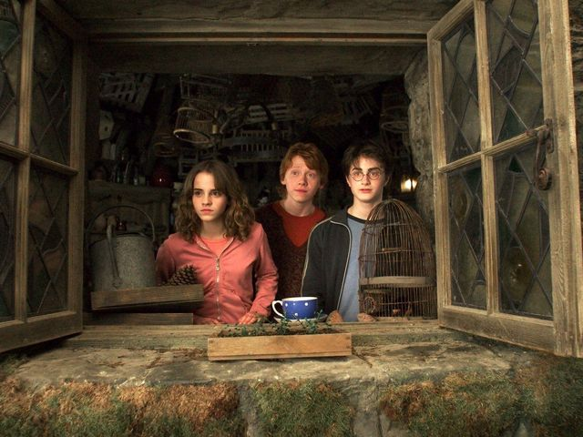

Neville cuenta que está aterrado. Los Dementores succionan el alma y se llevan la felicidad de quien se acerca. Habla bajo, como si pudieran oírlo.
Nadie sabe por qué están ahí ni a quién buscan. El fuego se apaga de a poco. Hermione siente un frío que no viene de ninguna ventana.
Esa noche nadie duerme. La pregunta queda flotando en la oscuridad, sin respuesta.